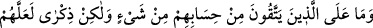
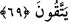
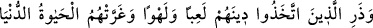
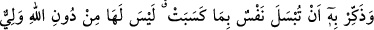

Âyette bahsedilen “unutturma”, sadece bir ihtimal olarak eğer unutturma vaki olursa
diye zikredilmiştir. Şu halde unutturma mutlaka meydana gelecek demek değildir.
Bununla birlikte İslâm âlimleri, dalgınlık (sehv) ve unutmanın peygamberlerin hakkında
caiz olduğunda ittifak etmişlerdir.
Buradaki “şeytan” dan murad; İblis’tir. Ya da onun ordusunda ileri gelenlerden biridir.
Çünkü Peygamberimiz (a.s.)’ın kendi şeytanı, müslüman olmuştur. Ümmetinden her
birinin şeytanının aksine onun şeytanı Efendimiz’e ancak hayır telkininde bulunurdu.
Nitekim hadiste şöyle buyurulmuştur: “Ben, şu iki hususta Adem (a.s.)’dan üstün
kılındım: Benim şeytanım kâfir idi, Allah bana yardım etti de o müslüman oldu.
Hanımlarım da bana (hayırlı işlerde) yardımcı oldular. Adem (a.s.)’a gelince, şeytanı
ve hanımı hatâ etmesi husûsunda ona yardım etmişlerdir.”[125]
Bu âyet-i kerîmenin nüzûlünden sonra müslümanlar “Kâfirlerin Kur’an’la alay etmeye
her başlayışında yanlarından kalkacak olursak; biz artık ebediyyen Mescid-i Haram’da
oturamayız ve Kâbe’yi de tavaf edemeyiz. Çünkü onlar daima din ile alay ediyorlar.”
deyince Allah Teâlâ onlara vaaz etmek ve gerçekleri hatırlatmak maksadıyle onların
meclisinde oturmaya ruhsat vererek şöyle buyurmuştur:
69. Takvâ sahiplerine, inanmayanların hesabından herhangi bir sorumluluk yoktur.
Fakat belki korunurlar diye hatırlatmak gerekir.
“(Günahlardan) korunanlara, o (inanmaya) nların hesabından bir sorumluluk
yoktur.” Âyetin anlamı şöyledir: “ Kur’an âyetleri hakkında tezvîratta bulunan kâfirlerin
söz ve davranışlarından sakınan mü’minlere, onların hesâba çekileceği cürüm ve
günahlardan ötürü bir sorumluluk yoktur.
“Ama belki korunurlar”, utanarak ve yaptıkları kötülüğü çirkin görerek âyetlere dil
uzatmaktan sakınırlar “diye” yaptıklarının yanlış olduğunu kâfirlere “hatırlatmak
lazımdır” mü’minlerin onları uyarmaları, ileri geri konuşmaktan ve diğer kötülüklerden
uygun bir şekilde men etmeleri gerekir. Bu da imkânlar nisbetinde onlara nasihat etmek
ve hakikatleri hatırlatmakla olur. İçinde bulundukları durumun çirkinliğini göstermekle
olur.